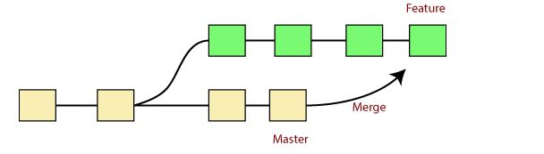

1. In Git, the merging is a procedure to connect the forked history. 2. It joins two or more developement history together. 3. The git merge command facilitates you to take the data created by git branch and integrate then into a single branch. 4. Git merge will associate a series of commits into one unified history. 5. Generally, git merge is used to combine two branches.  In the above figure, there are two branches master and feature. We can see that we made some commits in both feature and master branch, and merge them. It works as a pointer. It will find a common base commit between branches. Once Git finds a shared base commit, it will create a new "merge commit". It combinesthe changes of each queued merge commit sequence.To merge -
git merge branch_nameIt can be used in various context. Some are as follows:
Scenario 1: To merge the specified commit to currently active branch: Example -> $ git merge commit-id Note: The above command will merge the specified commit to the currently active branch. You can also merge the specified commit to a specified branch by passing in the branch name in commit. Scenario 2: To merge the commits into the master branch: Same as scenario 1. Scenario 3: Git merge branch: Git allows merging the whole branch in another branch. Example -> git merge branch_nameTo verify the merge -
git logTo push to central repo like github -
git push origin master Note:- Git Pulling Request - Usually happend before merge to check if any conflict is happening or not. While merging two different branches or merging another branch with master.